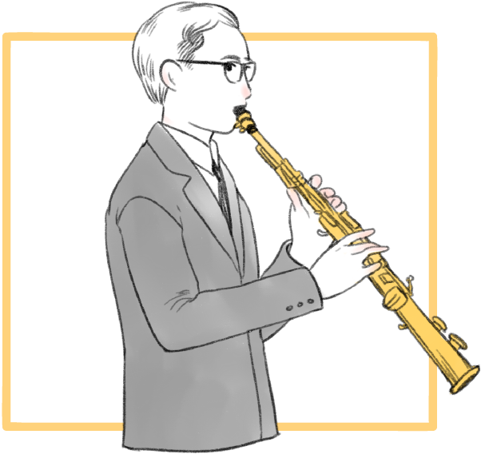

พระบาทสมเด็จพระเจ้าอยู่หัว ทรงเริ่มเรียนดนตรีเมื่อมีพระชนมายุ ๑๓ พรรษา ขณะที่ประทับอยู่ ที่ประเทศสวิตเซอร์แลนด์ กับครูชาวอัลซาส ชื่อ นายเวย์เบรชท์ โดยทรงเรียนการเป่า แซกโซโฟน วิชาการ ดนตรี การเขียนโน้ต และการบรรเลงดนตรีสากลต่างๆ ในแนวดนตรีคลาสสิคเบื้องต้น ต่อมาจึงเริ่มฝึก ดนตรีแจ๊ส โดยทรงหัดเป่าแซกโซโฟน สอดแทรกกับแผ่นเสียงของนักดนตรีที่มีชื่อเสียงได้เป็นอย่างดี เช่น Johnny Hodges และ Sidney Berchet เป็นต้น จนทรงมีความชำนาญสอดแทรกกับแผ่นเสียงของนักดนตรี ที่มีชื่อเสียงได้เป็นอย่างดี และทรงโปรดดนตรีประเภท Dixieland Jazz เป็นอย่างมากพระบาทสมเด็จ พระเจ้าอยู่หัวทรงเครื่องดนตรีได้ดีหลายชนิด ทั้งประเภทเครื่องลม เช่น แซกโซโฟน คลาริเนตและประเภท เครื่องทองเหลือง เช่น ทรัมเป็ต รวมทั้งเปียโน และกีตาร์์ที่ทรงฝึกเพิ่มเติมในภายหลังเพื่อประกอบการ พระราชนิพนธ์เพลงและเพื่อทรงดนตรีร่วมกับวงดนตรีส่วนพระองค์เอง
ในส่วนที่ทรงพระราชนิพนธ์เพลงนั้น ทรงเริ่มอย่างจริงจังเมื่อมีพระชนมายุ ๑๘ พรรษา ขณะเมื่อยังทรงดำรง พระยศเป็น สมเด็จพระอนุชาตามเสด็จ พระบาทสมเด็จพระเจ้าอยู่หัวอานันทมหิดล เสด็จนิวัตพระนคร เมื่อปีพุทธศักราช ๒๔๘๘ ดังที่พระวรวงศ์เธอ พระองค์เจ้า จักรพันธ์เพ็ญศิริ บันทึกความไว้ดังนี้ “ ๕ ธันวาคม ๒๔๘๘ พระบาทสมเด็จพระเจ้าอยู่หัว รัชกาลที่ ๘ เสด็จนิวัตสู่ประเทศไทยพร้อม สมเด็จพระอนุชาและสมเด็จพระราชชนนีประทับ ณ พระที่นั่งบรมพิมาน ในพระบรมมหาราชวัง ได้โปรดเกล้าฯ ให้เข้าเฝ้าในฐานะนักแต่งเพลงสมัครเล่น ได้นำโน้ตที่ได้แต่งไว้แล้วถวายทอดพระเนตร พระราชทานข้อแนะนำเกี่ยวกับการแต่งเพลงประเภทบลูส์ โดยทรงเปียโนสาธิตให้ฟัง และสมเด็จพระอนุชา มาใส่คำร้อง เพลงแสงเทียน ยามเย็น สายฝน ตามลำดับแต่เพลงยามเย็นและเพลงสายฝนได้นำออกสู่ ประชาชนก่อนเพลงแสงเทียน โดยพระราชทานให้ออกบรรเลงในงานลีลาศที่สวนอัมพรโดยวงดนตรีของ กรมโฆษณาการ (กรมประชาสัมพันธ์) ควบคุมวงโดย เอื้อ สุนทรสนาน และออกอากาศทางวิทยุ กรมโฆษณาการเป็นประจำ เป็นที่ซาบซึ้ง และประทับใจพสกนิกรอย่างมาก....”
จนกระทั่งปีพ.ศ ๒๕๐๗ สถาบันการดนตรีและศิลปะการแสดงแห่งกรุงเวียนนา (ปัจจุบันเปลี่ยนฐานะเป็น มหาวิทยาลัยการดนตรีและศิลปะการแสดง) ได้ทูลเกล้าฯ ถวายประกาศนียบัตรและสมาชิกกิตติมศักดิ์ ลำดับที่ ๒๓แด่พระบาทสมเด็จพระเจ้าอยู่หัว พระบรมนามาภิไธย “ภูมิพลอดุลยเดช” ปรากฏอยู่บนแผ่น จำหลักหินของสถาบันทรงเป็นสมาชิกกิตติมศักดิ์ที่มีอายุน้อยที่สุดและเป็นชาวเอเชียเพียงผู้เดียวที่ได้รับ เกียรติอันสูงสุดนี้ พระอัจฉริยภาพด้านดนตรีในพระบาทสมเด็จพระเจ้าอยู่หัวเป็นที่ชื่นชม ไม่เพียงในประเทศไทยเท่านั้น นักดนตรีต่างประเทศทั่วโลกก็ชื่นชมและยอมรับในพระอัจฉริยภาพนี้